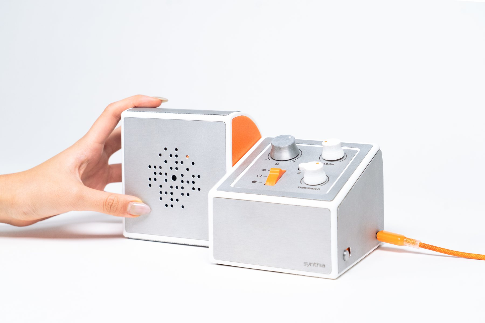

Synthia

HCI/interaction design
Wizard-of-Oz prototyping
4.031: Design Studio: Objects and Interaction (Prof. Marcelo Coelho)
6 weeks, Winter 2025 (second half of the Fall 2025 semester)
Joanne Hong (MIT '27), Pria Sawhney (MIT '27)
SOLIDWORKS
Arduino IDE
TouchDesigner
Electronics/circuitry
Laser cutting
FDM 3D printing
Sheet metal forming
Synthia combines live video and ambient audio to generate audio-reactive visuals, projected back into the room. A three-state switch picks between three graphic modes — dots (a particle simulation), lines (edge detection), and solids (pixelation) — while knobs tune audio sensitivity, video threshold and contrast, and color. The camera rotates to face either the user or an audience, and a mirror button flips the graphics to match. I built Synthia with Joanne Hong and Pria Sawhney; the work was heavily collaborative, but my focus was the mechanical design, fabrication, and electronics.
Context/Motivation
In the second half of 4.031, taught by Marcelo Coelho, our brief was to design an interactive digital camera using Wizard-of-Oz prototyping — reimagining what it means for something to be a "digital camera" and challenging how people interact with one.
Problem Framing
My team drew inspiration from music technology — especially the audio-reactive visuals of live concerts, which seem to flood the floor with life and excitement, an atmosphere that's much harder to create in less-equipped spaces like a home. We were also drawn to the way a "transforming" form factor can spark curiosity and excitement. Those two goals shaped everything after. At a minimum, the camera needed a pitch degree of freedom so it could be aimed. And because the visuals had so many parameters, the controls had to be intuitive and fun to play with — built from components we could get within a six-week timeline.
Process
Form factor
We explored transforming forms through sketches, a cardboard prototype, and a first 3D-printed prototype before settling on two asymmetrical halves. One half is curved, inviting the user to rotate the camera; the other is a near-rectangular module holding the control panel, whose slant gives the user a clear sense of where to stand. The volume of the electronics drove much of the final size, though we worked to keep it compact.
Sheet metal forming
We wanted a finish we didn't think an FDM-printed prototype could deliver: a seamless aluminum facade. Matching the continuous curves of our form nearly ruled it out. Rather than give up the form or the material, I designed custom 3D-printed stamping jigs that worked with clamps we already had in-house, using the sheet metal springback equation to set the jig geometry so the aluminum would settle exactly onto the intended curve.
- Ri, Rf
- the bend radii before and after release
- Y
- yield strength
- E
- elastic modulus
- t
- sheet thickness
Electronics and controls
Because the class encouraged Wizard-of-Oz prototyping to keep the focus on physical object design, a laptop running TouchDesigner generated the visuals, and I built the hardware that fed it: an Arduino Micro streaming serial data into TouchDesigner, with a protoboard connecting the encoders, buttons, switches, microphone, and camera. The hardest constraints were housing volume, which shaped the device's overall form, and building an intuitive, fun interaction from available components — which led us to design custom button, knob, and switch caps, with Synthia's signature pop of orange where it counted.
Pitch magnet–bearing assembly
We wanted the camera to turn smoothly, but time was short, so I leaned into the constraint with a simple bearing assembly. I 3D-printed the tube shaft in its strongest print orientation and kept it hollow, so wiring could pass through without interfering with rotation. The camera half turned smoothly but wouldn't hold its angle — likely from the weight imbalance of its irregular geometry, worsened by tension from the cables inside. To fix this, I embedded magnets in the adjacent walls of the camera and control halves, giving the user eight distinct angles and tactile feedback as the camera rotates.
Room for Improvement
Given more time, I would have made a few choices more rigorously. I printed the tube shaft because there wasn't time or budget to source a metal rod, but I'd avoid that in most other situations. I'm proud of the sheet metal stamps, but a more gradual release mechanism on the jigs would make them easier to use. And the electronics housing could have been more compact for easier assembly — though, in fairness, it was my first time designing one.
Outcome
Reflection
Synthia introduced me to valuable skills like hardware integration and sheet metal forming, but its biggest lesson came from being my first truly multidisciplinary team. If I had to sum it up: being a good teammate on an interdisciplinary project means being reliable enough that people can build on what you own, and humble enough to rely on their expertise where yours runs out.